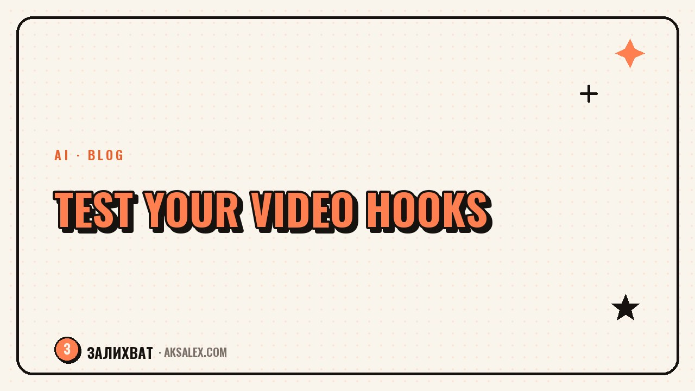

How to Test Hooks and Find the Ones That Work

Why you can't just guess a hook
A creator's intuition and a viewer's reaction often diverge. You know the context, the value of the video is obvious to you, but the viewer only sees the first second and decides instantly. So a hook that seems brilliant to you can flop, while a plain one unexpectedly takes off.
The only honest judge is the retention of those first seconds. It shows how many people stayed after the hook and how many left. That's not an opinion, it's the behavior of a live audience, and that's what you should lean on rather than guesses.
You don't judge a hook by taste. You test it with a number: how many people stayed after the first second.
Which metric to watch
The main indicator is retention in the first three seconds. If eighty out of a hundred viewers stayed after the hook, the hook is strong. If forty, it's weak - people leave before the substance. In your analytics you can see this on the retention graph: a steep drop right at the start means a failed hook.
What to look for in the retention graph
- A drop in the first or second second - the hook didn't grab anyone.
- A gentle decline after a good start - the hook worked, the issue is in the body of the video.
- High retention in the first seconds - the hook can be reused on other topics.
- A rise in the middle - there's something interesting there worth moving into the hook.
Don't confuse retention with total views. A video can rack up a lot of impressions and still have a failed hook - the algorithm showed it widely, but people bailed right away. Look at the share of people who stayed, not the absolute numbers.
How to set up an honest test
For a fair comparison, change only one thing - the hook - and keep everything else the same. Shoot the same video with three to five different opening lines or shots and post them at intervals. Then the difference in retention will show the strength of the hook specifically, not of the topic or the timing.
| Element | In the test | Why |
|---|---|---|
| Hook | Change it | It's what we're testing |
| Video topic | Keep it | Otherwise you can't tell what worked |
| Body and ending | Keep them | The difference should only be at the start |
| Posting time | Similar | So different traffic doesn't skew it |
You don't need to test everything at once. Take one topic, make several hooks for it, and find the winner. Then carry that working formula over to other topics - that's how you build a bank of proven hooks.
From a test to a bank of working hooks
Every test gives you not just a winner in the moment, but an understanding of which type of hook lands with your audience. Record the results: which hook, what retention, on which topic. In a month you'll have a list of formulas that consistently work for you specifically.
- Keep a table: hook, type, topic, first-seconds retention.
- Mark the winners and reuse their formulas on new topics.
- Weed out the types of hooks that consistently flop.
- Once a month, review the bank and update the list of what works.
This way you stop starting every video from scratch. You have proven templates and just plug in the topic. That's the shift from guessing to a system that relies on your own numbers.
Common mistakes in testing hooks
The first is changing everything at once: the hook, the topic, the styling. Then you can't tell what actually worked. Change one thing at a time. The second is drawing a conclusion from a single video: a one-off result can be a fluke, you need at least a small series.
The third mistake is looking at likes instead of retention. Likes come from people who watched to the end, but the hook works earlier - on those still deciding whether to stay or leave. The fourth is abandoning a test halfway and going back to your favorite hook with no data. Trust the numbers, not the habit.
Frequently Asked Questions
Which metric should you judge a hook by?
By retention in the first three seconds. It shows the share of viewers who stayed after the hook. A sharp drop in the graph at the start means the hook didn't grab anyone and it's time to change it.
How many hook variations should you test?
Three to five per topic. Change only the opening line or shot and keep everything else the same - then the difference in retention will show the strength of the hook, not the topic.
Can you judge a hook by a single video?
No, a one-off result can be a fluke. You need at least a small series and repeatability. A single flop or success isn't yet a pattern worth relying on.
Why can't you judge a hook by likes?
Likes come from people who already watched to the end, but the hook works earlier - on those deciding whether to stay or leave. Likes speak to the video as a whole, not to the strength of the first second.
What do you do with a hook that worked?
Write down its formula and carry it over to other topics. That's how you build a bank of proven hooks, so you start each new video not from scratch but from a working template.
Enjoyed this one? Here's what to read next. How AI handles sound in videos: background music, voiceovers, noise cleanup, and effects.
Read the article →not by hand